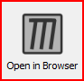
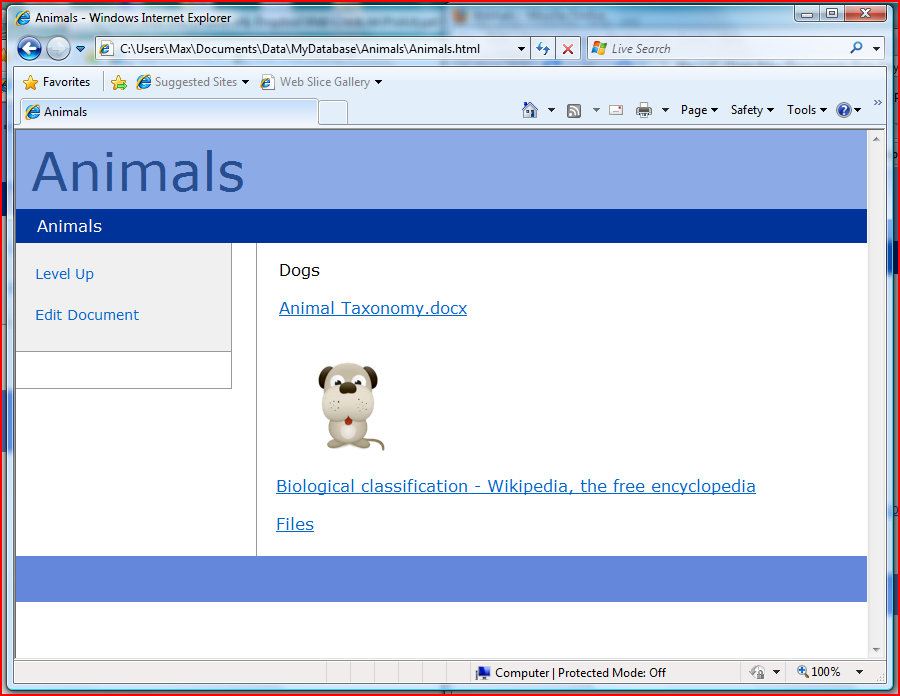

To open a link document in a web browser, just select the toolbar icon [Open In Browser].

This should open the HTML representation of your Linnk document.

You can browse your database or open external links and embedded files by following the links on the HTML pages.